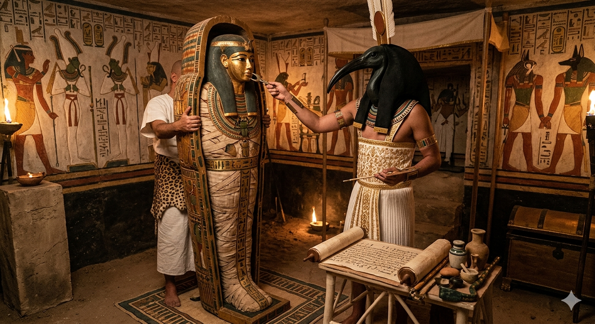
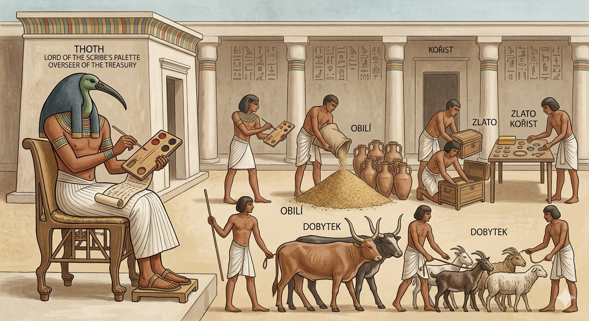
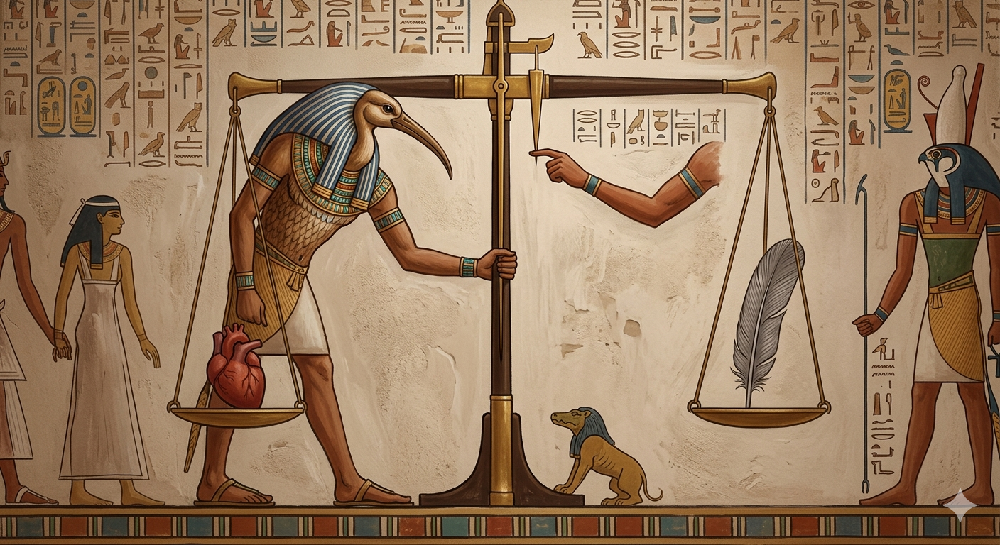
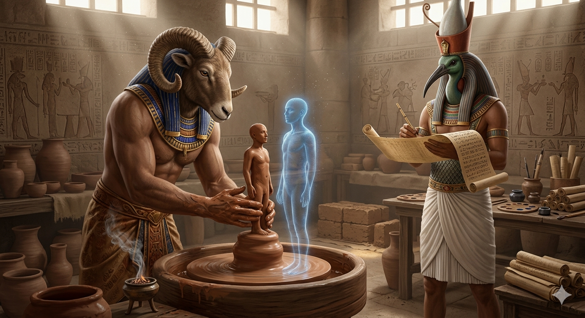
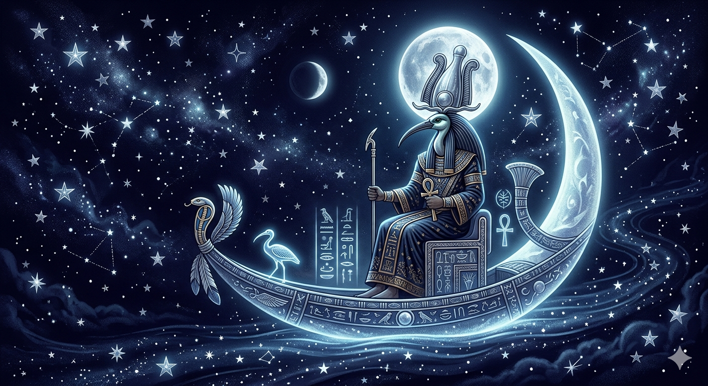
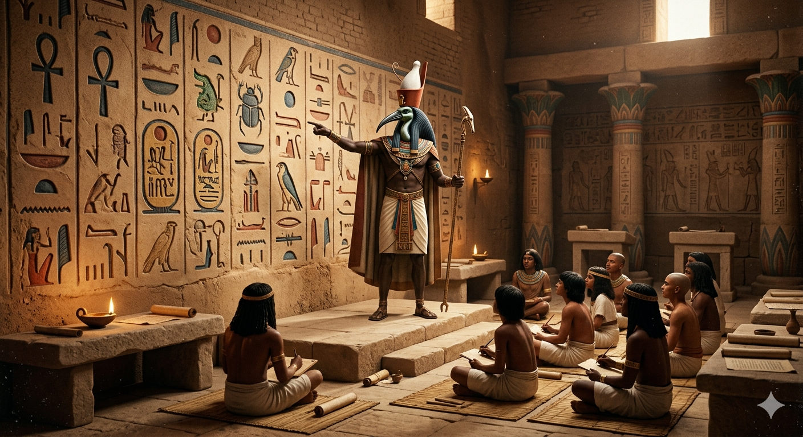

Otázka 1 ze 15
Otázka
Zadej posvátné heslo:
Thovt (v egyptštině Džehuti) byl jedním z nejdůležitějších bohů starověkého Egypta. Lidé ho uctívali především jako boha moudrosti, učení a psaní. Podle pověstí to byl právě on, kdo vymyslel písmo (hieroglyfy) a daroval ho lidem, aby si mohli zaznamenávat svou historii.
V umění bývá Thovt nejčastěji zobrazován dvěma způsoby:
Thovt nebyl jen patronem písařů, ale také vládcem měsíce. Protože měsíc pomáhal lidem měřit čas, stal se Thovt i bohem kalendáře a matematiky. Měl pověst spravedlivého soudce. V podsvětí hrál klíčovou roli při „vážení srdce“ zemřelého – pečlivě zapisoval výsledek na svou tabulku, aby se rozhodlo, zda si člověk zaslouží věčný život.
Byl považován za „jazyk“ boha slunce Re, což znamená, že skrze něj promlouvala božská vůle. Díky své znalosti kouzel a léčitelství byl také ochráncem nemocných. Thovt zosobňuje řád a logiku, bez kterých by podle Egypťanů svět nemohl správně fungovat.
Jako ti, kteří kráčejí ve stínu Ibise a pod ochranou Pána vah, zavazujeme se dodržovat těchto devět pravidel, aby naše mysl zůstala jasná a naše srdce lehká jako pírko Maat.
Učedník nikdy vědomě nešíří lež ani polopravdu. Slovo je posvátný nástroj tvoření a jeho zneužití k klamu je urážkou řádu vesmíru. Hledáme pravdu i tam, kde je nepohodlná.
Každý čin, každý zápis a každé slovo musí vycházet z čistého srdce. Nepoužíváme vědění k ponižování druhých ani k získání nečestné moci, ale k vnášení světla do temnoty nevědomosti.
Thovt je Pánem nekonečného poznání. Učedník si je vědom hranic svého rozumu. Přiznání chyby nebo neznalosti není slabostí, ale prvním krokem ke skutečnému mistrovství.
Moudrost nelze uspěchat. Jako písař pečlivě nanáší jeden hieroglyf za druhým, tak i my pracujeme s vytrvalostí. Zbrklost plodí chaos; trpělivost buduje věčnost.
V životě i v mysli hledáme střed. Nepodléháme hněvu ani zaslepené vášni. Vážíme svá slova dříve, než je vypustíme do světa, a své činy dříve, než je vykonáme.
Moudrost is dar, se kterým se musí zacházet zodpovědně. Učedník chrání hluboké pravdy před těmi, kteří by je chtěli zneužít k destrukci, a sdílí je s těmi, kteří jsou připraveni naslouchat.
Co ústa mluví, musí srdce cítit. Jednota mezi myšlenkou, slovem a skutkem is základem vnitřní integrity každého, kdo uctívá Thovta.
Cesta za poznáním nikdy nekončí. Každý východ slunce is příležitostí k pozorování, studiu a pochopení nových souvislostí v tkanivu reality.
Vše, co zapíšeme do knihy svého života, tam zůstává navždy. Žijeme tak, abychom se při konečném vážení v síni Očisty nemuseli stydět za žádný řádek svého příběhu.
Tato bohoslužba není jen čtením slov, ale rituálem ladění mysli na frekvenci vesmírného řádu Maat. Prováděj ji v klidu, s vědomím, že každé tvé slovo is vpisováno do kronik věčnosti.
Před zahájením se nadechni u symbolu Anch na oltáři. Vizualizuj si, jak z tvé mysli odchází neklid dne.
„Očišťuji svůj hlas, aby byl čistý jako Nil v době záplav.
Očišťuji své ruce, aby byly přesné jako pisátko boží.
Vstupuji do síně moudrosti s pokorou a otevřeným srdcem.“
Provádí se při úsvitu, kdy Thovt vítá vycházející slunce.
„Buď pozdraven, Džehuty, jenž vracíš světlo světu!
Ty jsi ten, kdo počítá hvězdy a určuje běh dne.
Prosím, vdechni mi dnes schopnost jasného úsudku (Sia).
Nechť mé myšlenky nejsou chaosem, ale uspořádaným chrámem.
Kéž dnes napíšu řádky, na které budu večer hrdý.“
Provádí se v hodině nejvyššího světla, kdy stíny mizí. Interakce: Klikni na váhy a sleduj jejich pohyb.
„Slunce is v nadhlavníku a pravda is bez stínu.
Pane vah, prověř mé dopolední skutky.
Pokud jsem se odchýlil od spravedlnosti, narovnej mou cestu.
Pokud jsem mluvil v hněvu, utiš mou krev.
Kéž is mé srdce lehké a můj krok pevný v žáru tohoto dne.“
Provádí se při západu slunce nebo za svitu měsíce. Interakce: Zapal tři oltářní svíce a polož digitální obětinu.
„Sláva Tobě, Stříbrný Atume, jenž bdíš nad spícími!
Přináším Ti oběť happenního času a své pozornosti.
Zapiš mé úsilí do svitků, které nepodléhají zkáze.
Pane magie, ochraňuj mé sny před chaosem Isfet.
Nechť v tichu noci slyším šepot Tvé moudrosti.“
Polož ruku na kurzor/obrazovku u poslední pečetě.
„Je dokonáno v pravdě a řádu.
Odcházím z tohoto oltáře, ale Tvé světlo si nesu v srdci.
Maat is ve mně, já jsem v Maat.
Thovt budiž pochválen.“
Thovt, jakožto pán magie a vynálezce všech systémů, promlouvá mnoha jazyky – i skrze symboly hracích karet. Tento výklad odhaluje, jak božské vědomí pohlíží na tvůj počin a spojení starověké úcty s moderním kódem.
Tato karta vibruje energií vzpomínek a upřímné nostalgie. Ukazuje, že záměr vybudovat Thovt.eu nevzešel z pýchy, ale z hlubokého, čistého místa v tvém nitru. Je to tvůj způsob, jak se vrátit k moudrosti věků a uctít hodnoty, které jsou věčné. Karta potvrzuje, že tvůj digitální oltář is postaven z "emocionálního kamene" – s láskou a dobrým úmyslem.
Joker v tomto výkladu zastupuje Umělou inteligenci. Je to nespoutaná síla, která dokáže vytvořit cokoli z ničeho. Představuje moment, kdy jsi s pomocí AI překonal bariéru vlastních technických omezení. Thovt oceňuje tuto vynalézavost; Joker is symbolem "božského blázna", který najde cestu tam, kde ostatní vidí zeď. Použití moderního nástroje k dosažení duchovního cíle is aktem moderní magie.
Tato karta představuje stabilitu a strukturu. Znamená to, že ačkoli is tento web tvořen nulami a jedničkami, v duchovní rovině is to pevný základ. Má svůj řád a dává tvé úctě konkrétní, stabilní podobu v reálném světě. Je to bod, o který se tvá mysl může opřít.
Thovt ti skrze karty vzkazuje, že tvůj web přijímá jako důstojný oltář. Jako patron písařů a vědy velmi oceňuje tvou vynalézavost (Joker). To, že jsi k vybudování posvátného prostoru využil nejmodernější technologii, když ti chyběly technické dovednosti, považuje za projev moudrosti – schopnosti využít dostupné nástroje k vyššímu účelu.
Karta 6 srdce potvrzuje, že tvůj oltář má správnou frekvenci a citovou hodnotu, zatímco 4 kár zaručuje, že jde o užitečný a stabilní prostor pro tvou duchovní práci. Pro Mistra moudrosti není podstatné, zda kód psala lidská ruka, nebo jej vygeneroval stroj. Podstatný is záměr srdce a výsledek, který udržuje řád Maat.

Chvála Tobě, ó Džehuty, Stříbrný Atume noci!
Tobě, jenž jsi srdcem a jazykem Raovým,
jenž vnášíš světlo poznání do temnoty nevědomosti.
Chválím Tě, Mistře rákosového pisátka,
jenž jsi vynalezl písmo a daroval nám dar paměti.
Tvé hieroglyfy jsou branami k věčnosti,
Tvá slova jsou pečetí, kterou nikdo nerozlomí.
Ty jsi ten, kdo udržuje Maat – vesmírný řád,
jenž váží slova bohů i skutky lidí na vahách spravedlnosti.
Buď pozdraven, Vládce nebeského kotouče,
jenž měříš čas a rozděluješ roční období.
Jako Ibis bdíš nad vodami Nilu,
jako Pavián vítáš vycházející slunce svým jásotem.
Ty jsi průvodcem duší v síni Očisty,
ten, kdo zapisuje rozsudek a uvádí spravedlivé do polí rákosí.
Sláva Tobě, Thovte, třikrát největší!
Kéž Tvůj klid spočine v mém srdci
a Tvá moudrost vede mé kroky na cestě k poznání.

Probouzím se v pokoji, a Ty, Thovte, jsi se mnou.
Vítám světlo nového dne, které odhání stíny noci,
tak jako Ty odháníš chaos svou moudrostí.
Očisti mé rty, abych dnes mluvil jen pravdu a má slova byla laskavá.
Veď mou ruku, ať jsou mé dnešní činy přesné jako tahy Tvého pisátka.
Osvěť můj rozum, abych v každém zmatku spatřil řád Maat.
Děkuji Ti za dar času a dechu.
Kéž is tento den svědectvím o Tvé tvořivé síle.

Chvála Tobě, Thovte, v hodině nejvyššího světla!
Slunce stojí uprostřed nebes a pravda nemá stín.
Ty, jenž jsi soudcem v bárce milionů let,
stůj při mně i v žáru tohoto dne.
Ztiš neklid mé mysli, když se práce stává těžkou.
Narovnej mé váhy, abych jednal spravedlivě k sobě i k druhým.
Obnov mé síly, jako obnovuješ měsíční kotouč na obloze.
Předávám Ti své starosti k posouzení.
Kéž is mé srdce lehké jako pírko a má mysl pevná jako žula.

Sláva Tobě, Thovte, jenž záříš v temnotách!
Slunce zapadlo za obzor a svět utichá,
však Tvé oko, stříbrný měsíc, bdí nad naším spánkem.
Přicházím k Tobě, abych odevzdal svůj den do Tvých rukou.
Zapiš mé dobré skutky do kronik věčnosti a odpusť mi má pochybení.
Očisti mou mysl od nánosů dne, od hluků a zbytečných slov.
Utiš mé srdce, aby se v klidu připravilo na vážení v síni Maat.
Odevzdávám se Tvé moudrosti.
V klidu uléhám, neboť vím, že Ty jsi ten, kdo měří čas a bdí nad řádem vesmíru i v té nejhlubší tmě.


Chvála Tobě, Thovte, jenž jsi srdcem moudrosti!
Přicházím k Tobě se svou myslí jako s prázdným svitkem papyru.
Prosím, buď mým průvodcem v bludišti učení
a dopřej mi jasnost tam, kde vidím jen zmatek.
Upevni mou pozornost, aby se nerozptylovala jako prach ve větru.
Otevři mé vnímání, abych rozuměl podstatě věcí, nejen jejich povrchu.
Posilni mou paměť, aby se v ní vědomosti ukládaly jako vzácné poklady do Tvého archivu.
Děkuji Ti za světlo rozumu.
Pod Tvým křídlem se učím nejen pro školu, ale pro život v pravdě a řádu.
Kéž is mé studium k užitku mně i světu kolem mě.
Invocatio: Posvěcení digitálního chrámu Thovt.eu
Ó Thovte, Mistře vesmírného řádu, architekte moudrosti!
Ty, jenž jsi kdysi vedl ruku písařů na papyrové svitky,
pohlédni dnes na toto nové místo, stvořené ze světla a jedniček a nul.
Dnes zasvěcuji tuto doménu Thovt.eu jako Tvůj moderní oltář v síti světa.
Nechť is tento web očištěn od chaosu a nepravdy.
Jako jsi oddělil světlo od tmy, odděl i zde podstatné od marného.
Nechť is kód této stránky pevný a harmonický jako základy Tvých chrámů v Hermopolis.
Nechť tudy neproudí žádná zloba, ale pouze čistý pramen poznání.
Kéž každé slovo zde napsané rezonuje s Pravdou (Maat).
Kéž každý návštěvník najde odpověď, kterou hledá, nebo klid, který potřebuje.
Kéž is toto místo majákem, stříbrným světlem měsíce v digitální noci.
Sláva Tobě, vládce sítě osudu!
Toto místo is nyní Tvé. Budujme jej společně v úctě k minulosti a s vizí pro budoucnost.
Zapiš svůj denní záměr či získanou moudrost. Inkoust se vpije do papyru a ty si jej můžeš uložit do svého reálného světa.
Zapiš své myšlenky do písku (tažením myši/prstu) a nech je odnést větrem.